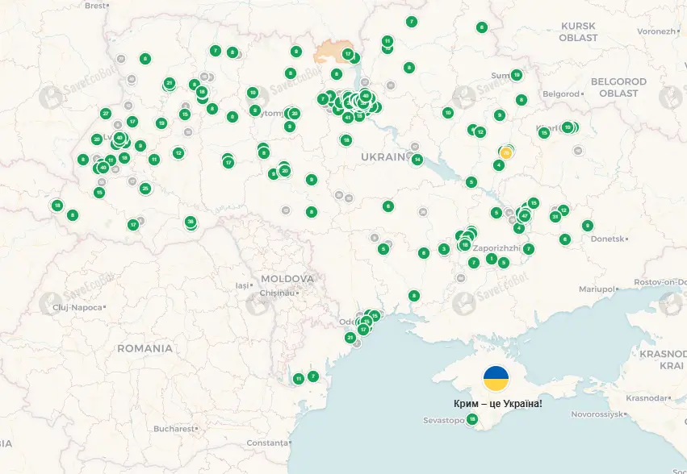

Якість повітря
Якість повітря безпосередньо впливає на наше здоров'я, самочувствие, довголіття. Забруднене повітря може спричиняти захворювання органів дихання, алергії, проблеми з серцево-судинною системою. Чисте повітря забезпечує краще життя, підвищує продуктивність і укріплює імунітет. Боротьба з забрудненням повітря — це не тільки екологічна проблема, а й питання нашого здоров'я і благополуччя.
Карта забруднення повітря україни
Рівні AQI
Що робити, залежно від якості повітря
Добрий AQI (0-50)
Ви можете насолоджуватися перебуванням на свіжому повітрі. Рекомендуємо займатися спортом та гуляти в парках.
Помірний AQI (51-100)
Вихід на вулицю можливий, але будьте обережні. Слідкуйте за власним самопочуттям – рекомендовано обмежити фізичну активність у зачинених приміщеннях.
Неприйнятний AQI (101-150)
Вживайте обережність, уникайте інтенсивної фізичної активності на вулиці, особливо для дітей та людей із хронічними захворюваннями.
Високо небезпечний AQI (151 і вище)
Не виходьте на вулицю, завжди закривайте вікна. Розгляньте можливість використання маски з фільтрами.
Графік середнього AQI за 2025
Для покращення якості повітря ви можете:
Підтримувати зелені насадження
Використовуйте громадський транспорт, велосипеди або ходіть пішки.
Зменшити використання автомобіля
Деревця і рослини очищають повітря від забруднень.
Слідкувати за споживанням
Вибирайте екологічно чисті продукти та матеріали, щоб зменшити викиди.